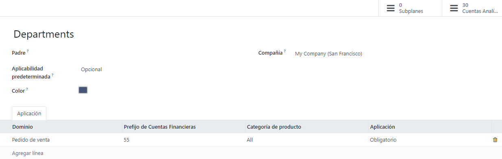
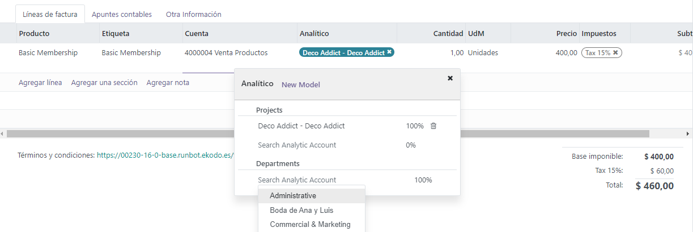

Contabilidad analítica¶
La contabilidad analítica le ayuda a llevar un seguimiento de los gastos e ingresos, así como a analizar la rentabilidad de un proyecto o servicio. El widget de contabilidad analítica le permitirá distribuir los costos en una o varias cuentas analíticas a la hora de crear sus asientos.
Configuración¶
Active la función Contabilidad analítica en .
Cuentas analíticas¶
Las cuentas analíticas ofrecen una vista general de sus gastos y ganancias.
Para acceder a sus cuentas analíticas existentes, vaya a . Si desea crear una nueva cuenta analítica, haga clic en Nuevo, y complete la información necesaria:
Cuenta analítica: defina el nombre de su cuenta analítica.
Cliente: seleccione el cliente relacionado con su proyecto.
Referencia: indique una referencia que le hará encontrar su cuenta de manera más fácil desde su factura.
Plan: añada un plan analítico;
Empresa: si tiene un entorno multiempresa, seleccione la empresa que usará la cuenta analítica.
Divisa: seleccione la divisa que se usará en la cuenta analítica.
El siguiente paso es completar su información de presupuesto .
Planes analíticos¶
Los planes analíticos le permiten analizar su contabilidad. Por ejemplo, le ayuda a llevar un seguimiento de los gastos e ingresos por proyecto o departamento.
Puede ver los planes analíticos en . Haga clic en Nuevo para crear un nuevo plan.
Debe completar la siguiente información:
Principal: vincule su plan a otro Plan analítico para crear una jerarquía entre ellos.
Aplicabilidad predeterminada: decide el comportamiento de su plan en el widget al crear un nuevo asiento en el diario:
Opcional: si está seleccionado, no es obligatorio añadir el plan analítico en el widget.
Obligatorio: si está seleccionado, aparecerá en el widget una viñeta naranja junto al plan hasta que se realice la distribución analítica (cuando se haga, cambiará a color verde); no se podrá confirmar la entrada si no se ha seleccionado ninguna cuenta analítica.
No disponible: si está seleccionado, el plan no estará disponible en el widget.
Color: establezca un color para la etiqueta relacionada a este plan en específico.
Empresa: agregue la empresa que usará el plan.
También puede perfeccionar la aplicabilidad de sus planes en la pestaña Aplicabilidad:
Dominio: elija qué documento contable utilizará su plan.
Prefijo de cuentas financieras: seleccione el prefijo de las cuentas que usarán este plan.
Categoría de producto: decide la categoría de producto que usará su plan.
- Aplicabilidad: decide el comportamiento de su plan en el widget al crear un nuevo asiento
de diario. La aplicabilidad que establezca aquí sustituirá la predeterminada.
Hay dos botones inteligentes disponibles en la esquina superior derecha:
Subplanes: se pueden crear para obtener una estructura analítica más compleja. Haga clic en Subplanes, Nuevo para añadir un subplan.
Cuentas analíticas: sirve para acceder a las cuentas analíticas relacionadas al plan.
Nota
El widget analítico se completa de forma automática según la aplicabilidad y los modelos de distribución analítica;
Cada plan analítico debe contar con al menos una cuenta analítica.
Distribución analítica¶
Añada un plan en la columna Analítica al crear una factura. Si vinculó su plan analítico a al menos una cuenta analítica, este campo es obligatorio. Una vez que añada el plan, aparecerá un widget que le pedirá más información. Puede añadir etiquetas que le ayuden a identificar las cuentas analíticas relacionadas y así dividir los gastos entre cuentas con tan solo modificar el porcentaje.
Modelos de distribución analítica¶
Los modelos de distribución analíticos ejercen una distribución específica según los parámetros definidos.
Si desea crear un nuevo modelo de distribución analítico, vaya a , haga clic en Nuevo y establezca las condiciones que debe seguir su modelo para que aplique de forma automática:
Prefijos en cuentas: se aplicará esta distribución analítica a todas las cuentas financieras que compartan el mismo prefijo establecido.
Contacto: seleccione un contacto que utilizará la distribución analítica.
Categoría de contacto: no se puede ver este campo de forma predeterminada, si desea verlo haga clic en el botón de selección de columnas y seleccione Categoría de contacto. Posteriormente, añada la categoría del contacto que usará la distribución analítica.
Producto: seleccione un producto que usará la distribución analítica.
Categoría de producto: no se puede ver este campo de forma predeterminada, si desea verlo haga clic en el botón de selección de columnas y seleccione Categoría de producto. Posteriormente, añada la categoría de producto que usará la distribución analítica.
Analítica: añada las cuentas analíticas y su distribución.
Empresa: seleccione una empresa que usará la distribución analítica.
Distribución analítica: si se cumplen las condiciones anteriores, el plan analítico definido en este campo y la distribución se seleccionarán de forma automática en el asiento.
Truco
Si desea editar de forma masiva varios asientos, vaya a y seleccione los que necesiten actualización. Añada la distribución necesaria en la columna distribución analítica y haga clic en el icono disco flexible para guardar. De esta manera saldrá una plantilla de distribución que podrá guardar y usar en el futuro.